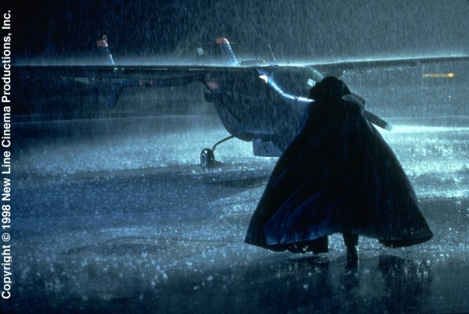

Meine Filme
Darsteller Michael H. Moss 

| 8618 | Fled - Flucht nach Plan | 1996 | 18 | 97 | 1080p | 5.3 / 10 | Action | |
| 11041 | Fluke | 1995 | 0 | 85 | 1080p | 6.7 / 10 | Drama | |
| 2488 | Passagier 57 | 1992 | 16 | 84 | 1080p | 5.9 / 10 | Action | |
| 235 | RoboCop 3 | 1993 | 16 | 104 | 1080p | 4.0 / 10 | Action | |
| 11964 | Stephen King's The Night Flier | 1997 | 18 | 92 | SD | 6.0 / 10 | Horror |